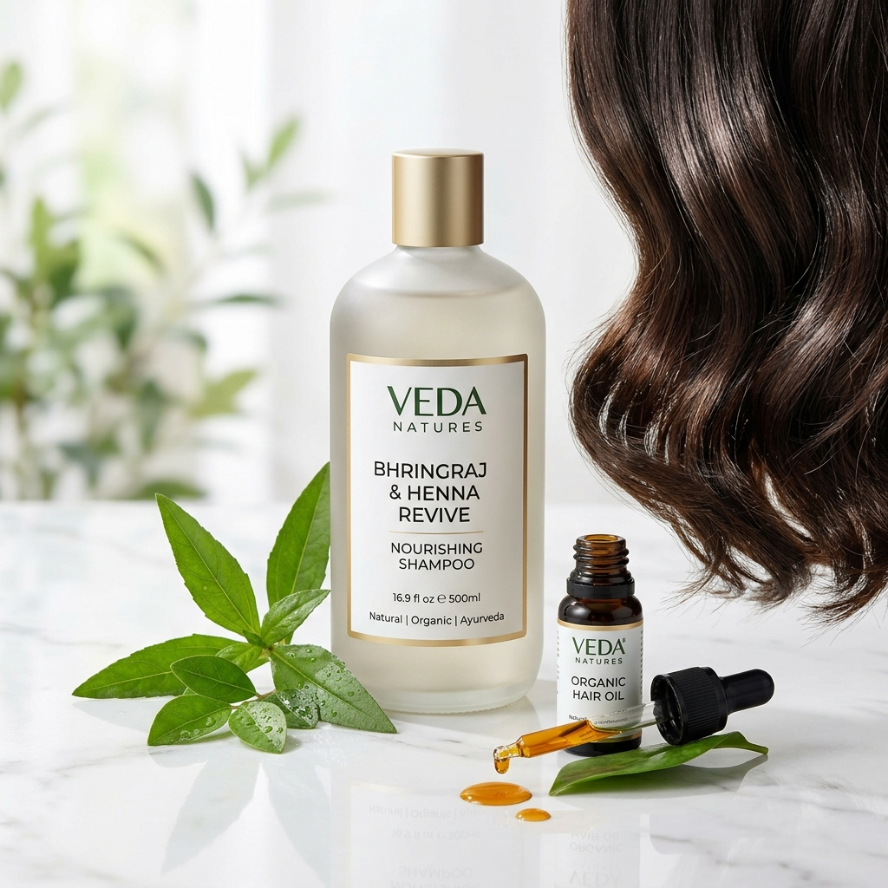
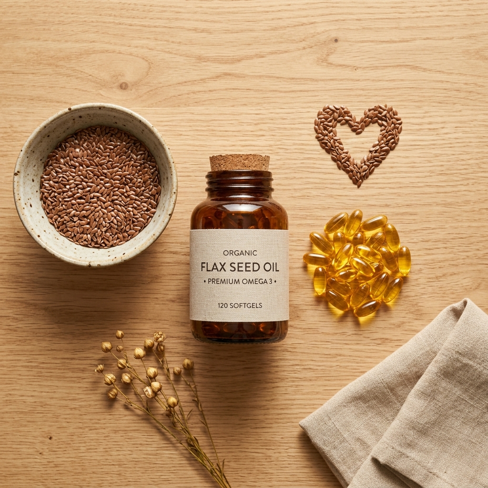
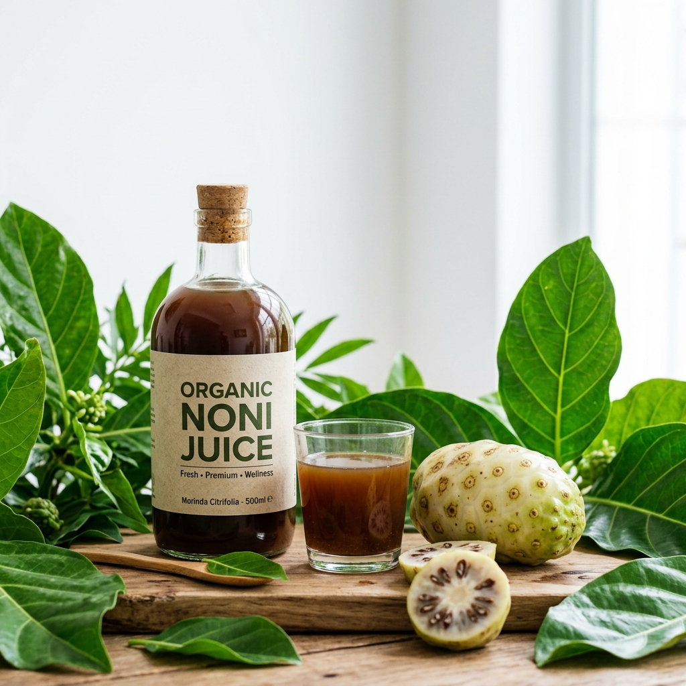
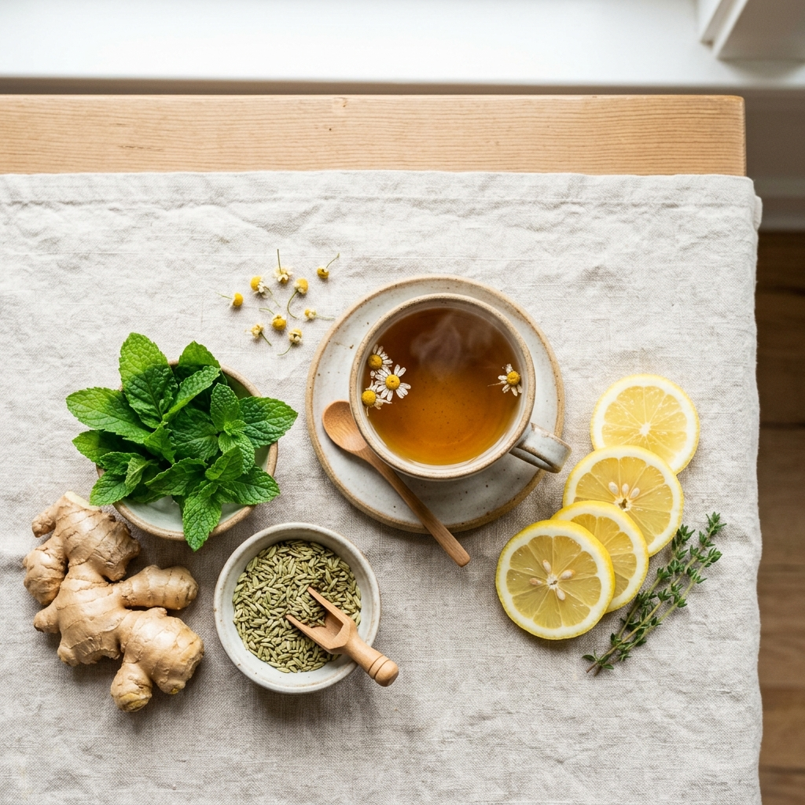
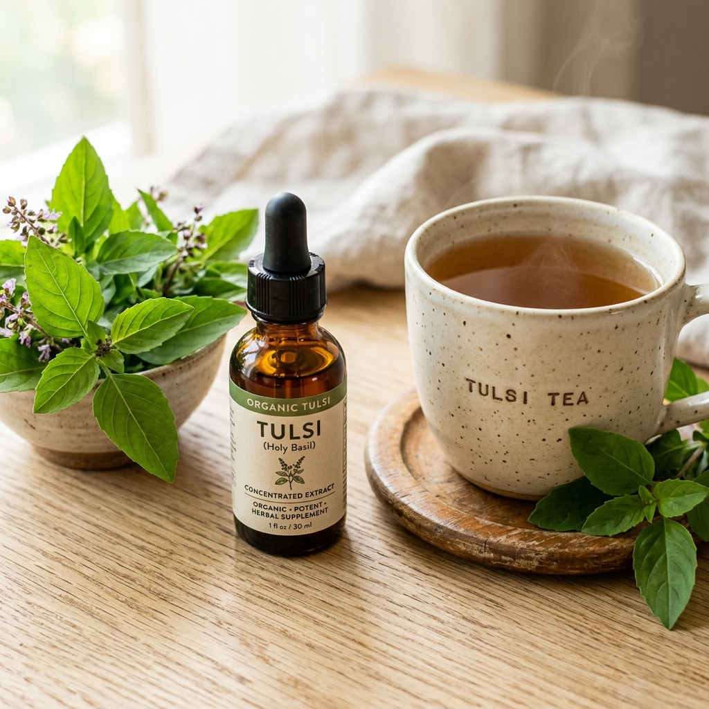

Health, Wellness & Lifestyle Center
Explore articles, guides, and tips on daily nutrition, Ayurvedic remedies, and healthy living.

7 Impressive Ways Vitamin C Benefits Your Body
Vitamin C is an essential nutrient our bodies cannot produce. Learn how it boosts immunity, speeds healing, benefits heart health, and defends against pollution.
Read Full Article →
Boost Hair Growth with the Power of Vitamin C
Explore the internal and external strategies to promote healthy, strong hair growth using Amla extracts and our advanced 3-step cosmetic technique.
Read Full Article →
Benefits of Omega 3 Fatty Acids (Flax Oil)
Discover how Omega-3 fatty acids in Altos Flax Oil Capsules promote heart health, lower cholesterol, support weight loss, and nourish your skin.
Read Full Article →
Daily Nutrition & Altos Supplements
An overview of human nutrients and how an unbalanced diet affects health. Explore our recommendation table of essential Altos nutrition products.
Read Full Article →
Noni Juice and Its Wonderful Health Benefits
Explore the remarkable health benefits of Noni Juice, from cellular rejuvenation and immune defense to detoxification and joint pain relief.
Read Full Article →Effective Treatment For Irregular Periods
Understand the root causes of menstrual irregularity and discover time-tested Ayurvedic remedies to restore hormonal balance naturally.
Read Full Article →
Improve Your Digestive Health
Good health begins in the gut. Learn how to optimize your digestion, relieve bloating, and improve nutrient assimilation with Ayurveda.
Read Full Article →
Powerful Health Benefits of Tulsi
Discover why Tulsi (Holy Basil) is called the Queen of Herbs, and how concentrated drops can defend your family's respiratory health.
Read Full Article →